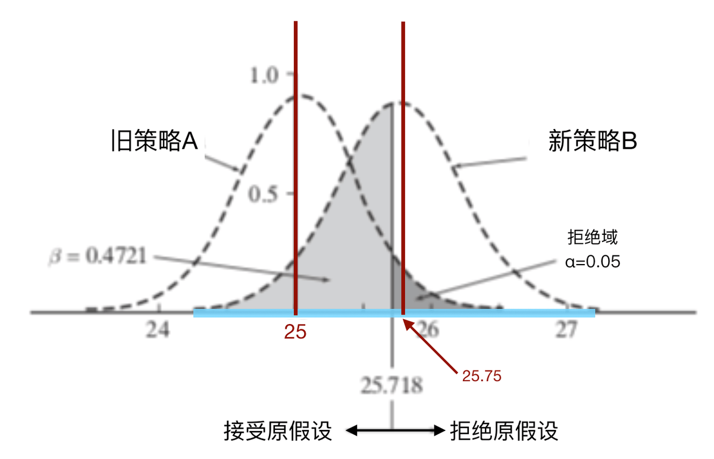

A/B实验
A/B实验本质上就是数理统计中假设检验的工程实践，所以我们从假设检验开始引入。
假设检验
假设检验基本概念
- 原假设（null hypothesis）H0：是实验者想要收集证据予以反对的假设。A/B实验中的原假设就是指“新策略没有效果”。
- 备择假设（alternative hypothesis）H1：是实验者想要收集证据予以支持的假设，与原假设互斥。A/B实验中的备择假设就是指“新策略有效果”。
利用反证法来检验假设，意味着我们要利用现有的数据，通过一系列方法证明原假设是错误的（伪），并借此证明备择假设是正确的（真）。这一套方法在统计学上被称作原假设显著性检验（NHST：null hypothesis significance testing）。
第一类错误和显著性水平( α )
第一类错误指原假设实际上是正确的（真），但是我们假设检验的结论却显示”原假设错误，备择假设正确“。这一过程中我们拒绝了正确的原假设，所以第一类错误是“弃真”。
在实际操作中表现为：实验结论显示我的新策略有用，但实际上我的新策略没有用。
在统计学中，我们用显著性水平( α )来描述实验者犯第一类错误的概率。
统计显著性：统计显著性 = 1 - 第一类错误的概率( α )，也称“置信水平、置信度、置信系数”，它的存在是为了描述实验结果的可信度。当某个实验组的指标是显著的，说明这个实验结果大概率是可信的。这个概率一般设为95%，也就是说，系统有95%的信心确认这个实验结果是准确的。
p-value：P值就是在原假设为真的前提下随机抽取样本出现极端情况的概率。当p-value < 1 - 置信度水平，认为统计显著。
如果P值很小，说明这种情况发生的概率很小，但如果出现了，根据小概率原理，我们就有理由拒绝原假设。P值越小，说明实验发现的差异是因为抽样误差导致的概率越小，极大程度上还是由于本质上存在差异造成，我们拒绝原假设的理由越充分。
第二类错误( β )和统计功效（statistics power）
第二类错误指原假设错误（伪），但是我们假设检验的结论却显示“原假设正确（真）、备择假设是错误的”，这一过程中我们接受了错误的原假设，所以第二类错误是“取伪”。
第二类错误在实际操作中表现为：我的新策略其实有效，但实验没能检测出来。
统计功效：在统计学中，统计功效 = 1 - 第二类错误的概率( β )，统计功效在现实中表现为：我的新策略是有效的，我有多大概率在实验中检测出来。

在上面的图中，浅灰色区域就是我们犯第二类错误的域，其面积占右侧钟形图形面积的比率，就是我们犯第二类错误的概率。这一概率被记作 β 。在图中的例子里， β 的取值为47%（计算过程就不展示了）。也就是说，在上面的例子里，即便我的新策略B有效，我仍有47%的概率没法检验出它是有效的。而统计效力=1−β=53%。这代表着我有53%的概率可以检测出新策略B是有效的。
|
接受原假设 |
拒绝原假设 |
| 原假设为真 |
正确：1−α |
第一类错误Type I（弃真）：α |
| 备择假设为真 |
第二类错误Type II（取伪）：β |
正确：1−β |
我们希望犯两类错误的概率都尽可能的小，但它们是矛盾的。假设检验的通常做法是，先保证第一类错误（“弃真”）的概率 α 有较小的值，在这个前提下，使犯第二类错误（”取伪“）的概率尽可能小。优先保证”弃真“的概率较小，容忍可能的”取伪“，在AB Test中可以理解为在没有充分的把握说明实验组的新策略一定好的情况下，相对保守一点使用对照组的原策略。
若要同时减少犯两类错误的概率，则必须增加样本量。
参数的假设检验
单个正态总体均值 μ 的检验
设 X1,X2,⋯,Xn 是正态总体 N(μ,σ2) 的样本，我们讨论关于均值 μ 的假设检验问题。在应用上常见的是对如下形式的假设进行检验：
- H0:μ=μ0,H1:μ=μ0
- H0:μ≤μ0,H1:μ>μ0
- H0:μ≥μ0,H1:μ<μ0
其中 μ0 是一个给定的数。
先考虑双边检验问题。以 Xˉ 估计 μ ，考察 Xˉ−μ0 的情况。直观上 ∣Xˉ−μ0∣ 的值越小，与原假设越符合；反之， ∣Xˉ−μ0∣ 的值越大，与备择假设 H1 越符合。因此，H0 的拒绝域是 ∣Xˉ−μ0∣ 大于一个界限值的区域。
总体方差 σ2 已知时
原假设 H0 成立时，检验统计量 U=σ/nXˉ−μ0∼N(0,1) ，若给定显著性水平 α ，则有：
P{σ/n∣Xˉ−μ0∣>u2α}=α
得到原假设 H0 的拒绝域为 ∣U∣>u2α，或者：
∣Xˉ−μ0∣>nσu2α
在这个检验中，我们使用了统计量U=σ/nXˉ−μ0 ，其服从的分布为 N(0,1) 。若一检验方法使用了服从标准正态分布的统计量，则称为U检验或者称为Z检验。
总体方差 σ2 未知时
由于 σ2 未知，所以用样本标准差 S 代替 σ 。在原假设 H0 成立时检验统计量 T=S/nXˉ−μ0∼t(n−1) ，故有：
P{S/n∣Xˉ−μ0∣>t2α(n−1)}=α
得到原假设 H0 的拒绝域为 ∣T∣>t2α(n−1)，或者：
∣Xˉ−μ0∣>nSt2α(n−1)
在上述检验中，我们使用了统计量T=S/nXˉ−μ0 ，其服从的分布为 t(n−1) 。若一检验方法使用了服从 t 分布的统计量，则称为t检验。
现在来考虑单边检验问题。
对于：H0:μ≤μ0,H1:μ>μ0
仍以 Xˉ 估计 μ ，考察 Xˉ−μ0 的值大于一个正界限值的区域。总体方差 σ2 已知时有：
P{σ/nXˉ−μ0>uα}=α
得到拒绝域为 U>uα 或者：
Xˉ−μ0>nσuα
总体方差 σ2 未知时有：
P{S/nXˉ−μ0>tα(n−1)}=α
得到拒绝域为 T>tα(n−1) 或：
Xˉ−μ0>nStα(n−1)
对于：H0:μ≥μ0,H1:μ<μ0
类似的，总体方差 σ2 已知时，拒绝域为： U<−uα 。总体方差 σ2 未知时，拒绝域为： T<−tα(n−1) 。
大样本非正态总体均值 μ 的检验
对于大样本的非正态总体而言，根据中心极限定理，当样本量 n 足够大时，其均值 μ 仍然服从正态分布。如果总体方差 σ2 未知，可以用样本标准差 S 代替 σ 。于是对于双边检验问题有：
P{S/n∣Xˉ−μ0∣>u2α}=α
得到原假设 H0 的拒绝域为 ∣U∣>u2α，即：
∣Xˉ−μ0∣>nSu2α
单边检验与之前类似，这里就不再赘述。
在实际AB实验的应用中，通常样本量都会是大于30的，符合大样本的条件。所以如果做均值的AB实验，就可以无脑选择U检验或者说Z检验，而无需考虑t检验，也不用在意总体的分布情况，只需要用样本标准差 S 代替 σ 。t分布在 n 很大的时候本身就会无限趋近于正态分布。
[!NOTE]
关于U检验和Z检验。国内教材基本都叫U检验，国外教材基本都叫Z检验。虽然U检验和Z检验是一回事儿，但是个人理解觉得，对于正态总体均值 μ 的检验更适合叫做U检验，而对于大样本总体均值 μ 的检验，更适合叫做Z检验。在实际AB实验中，样本量基本不会小于30，所以对于均值 μ 检验的问题，无需考虑总体是什么分布，以及总体方差 σ2 是否已知的情况，通通采用Z检验即可。
在实际AB实验中，不仅会碰到均值 μ 检验的问题，同时也经常碰到比率值或者说转化率类的检验问题。这类问题的总体实际上是服从二项分布的。在大样本的情况下同样可以转化为Z检验的问题。
设有 n 重伯努利实验，其中事件 A 发生的概率为 p ，则事件 A 发生次数的随机变量 X 服从二项分布，即 X∼B(n,p) 。对于参数 p 双边假设检验问题描述为：
H0:p=p0,H1:p=p0
对于二项分布，其数学期望 E(X)=np ，方差 D(X)=np(1−p) 。
当 n 很大时，根据中心极限定理，有：
Z=D(X)X−E(X)=np0(1−p0)np^−np0=p0(1−p0)/np^−p0∼N(0,1)
若给定显著性水平为 α ，则有：
p{p0(1−p0)/n∣p^−p0∣>z2α}=α
得到原假设 H0 的拒绝域为 ∣Z∣>z2α，或者：
∣p^−p0∣>p0(1−p0)/n⋅z2α
单边检验与之前类似，这里就不再赘述。